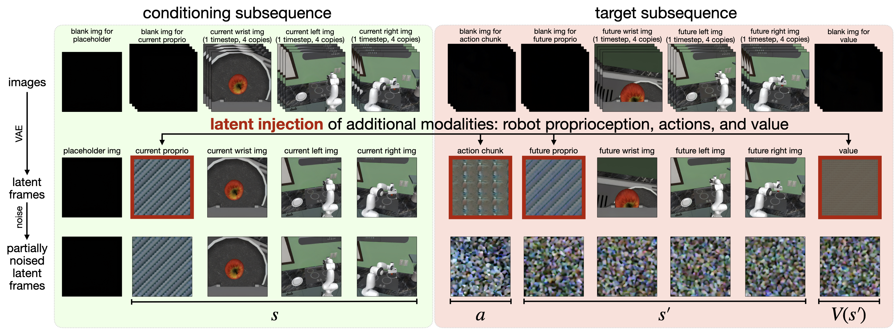
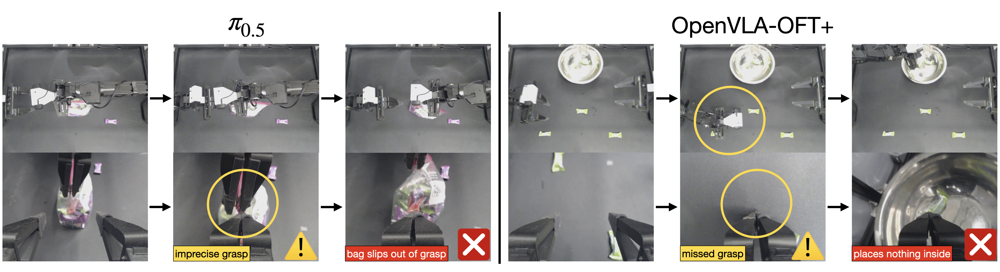
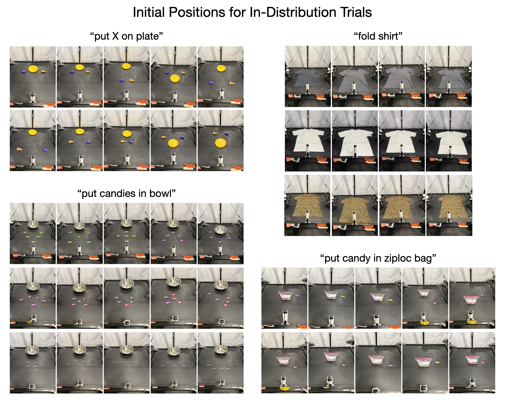
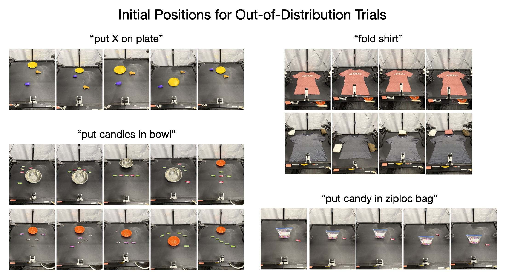
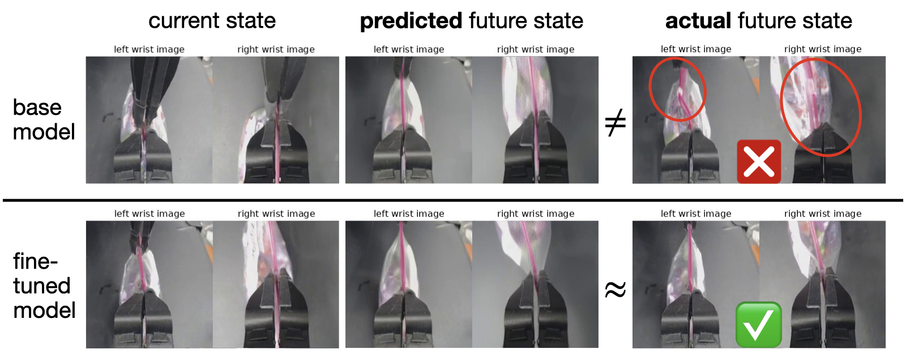

Cosmos Policy: Fine-Tuning Video Models for Visuomotor Control and Planning
1. 论文速览
Cosmos-Predict2-2B 直接微调成机器人策略，不改模型结构，只靠“把动作、未来状态和值函数都编码成潜变量帧”这一个统一接口，同时支持直接控制和基于模型的规划。
难度评级：★★★★☆
需要熟悉扩散模型、latent video model、imitation learning、world model / value function，以及机器人策略评测。
关键词
核心贡献清单
- 提出
Cosmos Policy：单阶段后训练，把预训练视频模型直接适配成机器人控制策略，不再额外设计 action head、inverse dynamics 或单独的 action diffuser。 - 提出
latent frame injection：把动作、机器人本体状态、未来状态和值函数都表示成视频潜空间里的“帧”，使同一扩散模型同时承担 policy、world model、value function 三种角色。 - 提出双模型部署：基础 checkpoint 负责出动作，利用 rollout 再微调的 checkpoint 负责预测未来状态和值，并在测试时做 best-of-N 规划。
- 在 LIBERO、RoboCasa 和真实双臂 ALOHA 上取得强结果；其中 LIBERO 平均 98.5%，RoboCasa 平均 67.1%，ALOHA 四任务平均得分 93.6。

2. 动机
2.1 要解决什么问题
论文关心的是：视频基础模型已经学到时序因果、隐式物理和运动模式，这些先验能不能直接拿来做机器人控制，而不是只用静态图文预训练的 VLA 作为骨干。作者希望得到一种既能输出动作，又能想象未来状态、还能评估未来是否值得执行的统一策略模型。
这里的具体痛点不是“机器人控制不够强”这么泛，而是两件事同时存在：第一，很多任务的动作分布是多模态的，比如抓糖果时可以先左手再右手，也可以反过来；第二，很多任务对精度极敏感，比如夹链袋滑扣，毫米级差异就会导致失败。作者认为视频模型在建模复杂、高维、多峰时序分布上有天然优势，因此值得直接迁移到控制里。
2.2 已有方法的局限
- 视频策略路线通常是多阶段的：先把视频模型适配到机器人数据，再单独训练动作模块，或者再加 inverse dynamics / action diffuser。这样训练链条更长、模块更多、误差来源也更多。
- 统一视频-动作模型虽然避免了多模块结构，但往往不是从大规模预训练视频模型初始化，而是自定义结构从头训，拿不到互联网视频上学到的时空先验。
- VLA 很强，但它们主要建立在静态图文预训练上。作者的判断是，这类骨干更偏语义，而不是动态物理过程本身，所以在高多模态、长时序、精细操控上未必是最自然的归纳偏置。
- 规划方面，如果只看 demonstration，world model 和 value function 看到的大多是成功轨迹；一旦真实执行进入失败或偏离分布的状态，它们的泛化会变差。作者在正文和规划实验里都强调：要让规划有用，必须引入 rollout 经验。[正文 §4.3]
2.3 本文的解决思路（高层次）
作者的核心思路是“不要给视频模型外挂新头，而是把机器人任务所需的一切都塞回它最熟悉的 latent sequence 里”。具体做法是：把当前观测 $s$、动作块 $a$、未来观测 $s'$、未来值 $V(s')$ 全部排成潜变量帧序列，让扩散模型继续做它最熟悉的事：从噪声恢复这些帧。
这样同一个模型在训练时可以通过不同的条件掩码分别学习三种条件分布：策略 $p(a,s',V(s')\mid s)$、世界模型 $p(s',V(s')\mid s,a)$ 和值函数 $p(V(s')\mid s,a,s')$。测试时可以只把它当 direct policy 用，也可以在 rollout 微调后，把它接成 best-of-N 的规划器。
3. 相关工作梳理
3.1 论文自述的相关工作
- Video-based robot policies：一类先微调视频模型，再训练独立动作模块；另一类直接训练联合视频-动作模型。作者把自己定位成第三条线：仍然保留统一生成，但直接从大视频模型初始化，并且不加结构修改。
- Vision-language-action models：RT-2、OpenVLA、π0.5、UniVLA、CogVLA 代表的是大骨干 + 机器人微调路线。论文的区别不在于“也有大骨干”，而在于骨干是视频生成模型而不是静态图文模型。
- World models and value functions：传统 Dyna/MBPO/TD-MPC/Dreamer 到近年的 FLARE、SAILOR、Latent Policy Steering 都说明规划有价值，但通常要分开建 policy/world model/value。本文的区分点是：同一预训练视频模型同时承担三者功能。
3.2 直接前作对比
| 维度 | Video Policy / UVA 类 | UWM 类统一视频动作模型 | VLA（OpenVLA / π0.5） | Cosmos Policy |
|---|---|---|---|---|
| 预训练骨干 | 视频模型，常需额外动作模块 | 自定义统一模型，通常不直接继承大视频模型 | 静态图文大模型 | Cosmos-Predict2-2B 视频扩散模型 |
| 结构改动 | 通常需要 | 模型本身就是为动作设计 | 动作头/微调策略依方法不同而异 | 不改结构，只改 latent sequence 的内容组织 |
| 动作表示 | 单独动作模块或逆动力学 | 联合视频-动作输出 | 直接回归或其他动作头 | 动作块被编码成 latent frame |
| 是否统一建模 future state / value | 通常不统一 | 不一定含 value | 通常无显式 world model / value | 统一建模动作、未来状态和值 |
| 规划能力 | 往往需要额外模块 | 未必支持 | 通常偏 model-free | rollout 微调后可直接 best-of-N 规划 |
| 论文内给出的代表结果 | Video Policy 在 RoboCasa 66.0，LIBERO Long 94.0 | UWM 在 RoboCasa 60.8 | OpenVLA-OFT 在 LIBERO 97.1；π0.5 在 ALOHA 平均 88.6 | LIBERO 98.5，RoboCasa 67.1，ALOHA 93.6 |
4. 方法详解
4.1 方法概览
整条 pipeline 可以按“输入组织 -> 统一训练 -> 两种部署方式”来理解：
- 输入端：当前时刻的多视角图像、机器人 proprioception、文本任务描述。
- 表示端：把图像本来就会经过 VAE 变成 latent frame；作者再把动作块、当前/未来机器人状态和值函数也复制、归一化并写进某些 latent frame 位置。
- 训练端：不同 batch 样本用不同条件掩码，分别对应 policy、world model、value function 三种条件生成任务。
- 部署端：若只做 direct policy，则并行生成 $(a,s',V)$ 后只执行动作；若做 planning，则先出动作，再出未来状态，再出 value，用 best-of-N 选动作。


4.2 方法演变脉络
4.3 核心设计与数学推导
公式 1 在做的事：把原本的视频扩散训练目标保留下来，区别只是“干净样本”不再只是视频帧，而是被插入了动作、状态和值的联合 latent sequence。
$$ \mathcal{L}(D_\theta, \sigma) = \mathbb{E}_{\mathbf{x}_0,\mathbf{c},\mathbf{n}} \left[ \left\| D_\theta(\mathbf{x}_0 + \mathbf{n}; \sigma, \mathbf{c}) - \mathbf{x}_0 \right\|_2^2 \right] $$
| $\mathbf{x}_0$ | 干净的 latent 序列。这里可以同时包含图像潜帧和注入后的动作/状态/value 潜帧。 |
| $\mathbf{c}$ | 文本条件，论文里由 T5-XXL embedding 提供。 |
| $\mathbf{n}$ | 高斯噪声，$\mathbf{n}\sim\mathcal{N}(0,\sigma^2 I)$。 |
| $D_\theta$ | Cosmos-Predict2 的 diffusion transformer 去噪器。 |
| $\sigma$ | 噪声强度；作者后面会专门改它的采样分布。[附录 A.2.1] |
公式 2 在做的事：定义 sparse reward 下的值函数，并用 Monte Carlo return 给每个 rollout transition 打标签。
$$ V^\pi(s)= \mathbb{E}_{\tau\sim\pi}\left[\sum_{k=t}^{H}\gamma^{k-t}R(s_k,a_k)\mid s_t=s\right] = \mathbb{E}_{\tau\sim\pi}\left[\gamma^{H-t}R(s_H,a_H)\mid s_t=s\right] $$
| $s_t, a_t$ | 时刻 $t$ 的状态和动作。 |
| $H$ | episode 时域长度。 |
| $\gamma$ | 折扣因子，把终局奖励往前传播。 |
| $R(s_H,a_H)$ | 终点奖励；正文里任务使用 sparse reward。 |
式子虽然没有写成一个总损失，但正文实际上定义了三类条件分布，它们对应同一网络的三种工作模式。
| $p(a,s',V(s')\mid s)$ | 策略训练：给当前状态，联合生成动作、未来状态和值。 |
| $p(s',V(s')\mid s,a)$ | 世界模型训练：给当前状态和动作，预测未来状态和值。 |
| $p(V(s')\mid s,a,s')$ | 值函数训练：给完整前缀，预测未来值。 |
为什么这种联合目标可能有效
如果只训练 $p(a\mid s)$，模型只需输出一个能完成任务的动作块；但 joint objective 要求它同时生成未来状态和值，相当于把“行为后果”作为辅助监督，逼迫隐藏表示对环境动态更敏感。论文中的 LIBERO 和 RoboCasa 消融都支持这一点。
潜帧注入没有被写成正式公式，但实现逻辑非常明确：先归一化，再复制，再 reshape 到单帧潜变量体积。
| 输入 | 例如动作块大小为 $K\times d_{act}$，先 flatten 成长度 $K d_{act}$ 的向量。 |
| 归一化 | 非图像模态统一缩放到 $[-1,+1]$。 |
| 复制 | 重复 $\frac{H'W'C'}{K d_{act}}$ 次，直到长度匹配一个 latent frame 的体积。[附录 A.1] |
| 解码 | 生成后对这些复制块求均值，再反归一化得到动作/状态/value 预测；非图像模态不需要 VAE 解码。 |

4.4 实现要点

5. 实验
5.1 实验设置
数据集与任务
| 平台 | 任务/数据 | 训练数据 | 观测与动作 | 补充细节 |
|---|---|---|---|---|
| LIBERO | Spatial / Object / Goal / Long 四套任务，单臂 Franka Panda | 每套 500 demonstrations（10 任务 × 50） | action chunk 16，测试执行完整 chunk | 策略训练过滤失败 demonstrations；world model/value 用未过滤数据 |
| RoboCasa | 24 个厨房操作任务，单臂 Franka Panda | 每任务只用 50 条人类遥操作 demonstrations | action chunk 32，执行 16 步后重查 | 评测用 5 个 scene，每任务 50 trials × 3 seeds，共 3600 次；只测未见物体，且部分风格从未在训练中出现 |
| ALOHA | 四个真实双臂任务：put X on plate / fold shirt / put candies in bowl / put candy in ziploc bag | 总计 185 demonstrations | 14 维关节角 + 3 路相机 + 文本；chunk 50（2 秒），完整执行后重查 | 101 次固定初始条件评测，含 IID 与 OOD |
基线方法
论文在仿真里对比了从头训练的 diffusion policy（Diffusion Policy、Dita），视频模型路线（UVA、UWM、Video Policy），以及 VLA 路线（π0、π0.5、OpenVLA-OFT、CogVLA、UniVLA、DP-VLA、GR00T-N1.5）。真实 ALOHA 上重点比较 Diffusion Policy、OpenVLA-OFT+、π0 和 π0.5。
评价指标
- LIBERO / RoboCasa：success rate。
- ALOHA：0-100 分的阶段性完成度分数，而不是二元成功。评分细则在附录给得很细，例如“put candy in ziploc bag”分成抓拉链、抓袋角、拉开袋口、抓糖果、放入袋中五个 20 分阶段。[附录 A.3.2]
训练配置与硬件
| 平台 | 训练步数 | GPU | 全局 batch | 耗时 | 训练后主要损失 |
|---|---|---|---|---|---|
| LIBERO | 40K | 64 × H100 | 1920 | 48 小时 | action 0.012；future proprio 0.007；future wrist latent 0.068；future third-person latent 0.036；value 0.007 |
| RoboCasa | 45K | 32 × H100 | 800 | 48 小时 | action 0.016；future proprio 0.007；future wrist latent 0.084；future third-person latent 0.048；value 0.007 |
| ALOHA | 50K | 8 × H100 | 200 | 48 小时 | action 0.010；future proprio 0.008；future wrist latent 0.097；future third-person latent 0.085；value 0.007 |
所有非图像模态都归一化到 $[-1,+1]$。基础模型均为全参数微调。[附录 A.2.2-A.2.4]
代码仓库与可复现性
论文明确表示会发布 model checkpoints、training data 和 code；公开入口是项目页 research.nvidia.com/labs/dir/cosmos-policy/。Reproducibility Statement 还说明训练和评测脚本会随发布提供。
5.2 主要结果
LIBERO 主结果
| 方法 | Spatial | Object | Goal | Long | Average |
|---|---|---|---|---|---|
| Diffusion Policy | 78.3 | 92.5 | 68.3 | 50.5 | 72.4 |
| Dita | 97.4 | 94.8 | 93.2 | 83.6 | 92.3 |
| π0 | 96.8 | 98.8 | 95.8 | 85.2 | 94.2 |
| UniVLA | 96.5 | 96.8 | 95.6 | 92.0 | 95.2 |
| π0.5 | 98.8 | 98.2 | 98.0 | 92.4 | 96.9 |
| OpenVLA-OFT | 97.6 | 98.4 | 97.9 | 94.5 | 97.1 |
| CogVLA | 98.6 | 98.8 | 96.6 | 95.4 | 97.4 |
| Cosmos Policy | 98.1 | 100.0 | 98.2 | 97.6 | 98.5 |
解读：Cosmos Policy 不是所有单项都第一，Spatial 上 π0.5 更高，但它在 Object、Goal、Long 三列拿到最好值，所以最终平均数最高。尤其 Long 从 OpenVLA-OFT 的 94.5 提到 97.6，说明作者强调的时序建模优势主要体现在长时序任务。
RoboCasa 主结果
| 方法 | 每任务训练演示数 | Average SR |
|---|---|---|
| GR00T-N1 | 300 | 49.6 |
| UVA | 50 | 50.0 |
| DP-VLA | 3000 | 57.3 |
| GR00T-N1 + DreamGen | 300 (+10000 synthetic) | 57.6 |
| GR00T-N1 + DUST | 300 | 58.5 |
| UWM | 1000 | 60.8 |
| π0 | 300 | 62.5 |
| GR00T-N1.5 | 300 | 64.1 |
| Video Policy | 300 | 66.0 |
| FLARE | 300 | 66.4 |
| GR00T-N1.5 + HAMLET | 300 | 66.4 |
| Cosmos Policy | 50 | 67.1 |
解读：RoboCasa 这张表最重要的信息不是 67.1 比 66.4 只高 0.7，而是它只用了每任务 50 条真人 demonstrations。论文用这张表强调的是数据效率，而不只是绝对精度。
真实 ALOHA 主结果
| 方法 | put X on plate | fold shirt | put candies in bowl | put candy in ziploc bag | Average |
|---|---|---|---|---|---|
| Diffusion Policy | 63.3 | 23.5 | 32.8 | 14.6 | 33.6 |
| OpenVLA-OFT+ | 68.3 | 99.5 | 21.6 | 58.5 | 62.0 |
| π0 | 85.0 | 98.5 | 71.2 | 56.9 | 77.9 |
| π0.5 | 98.3 | 99.5 | 95.2 | 61.5 | 88.6 |
| Cosmos Policy | 100.0 | 99.5 | 89.6 | 85.4 | 93.6 |
解读：Cosmos Policy 的平均分优势主要来自最后一个最难的 ziploc bag 任务：85.4 对比 π0.5 的 61.5，优势很大。candies in bowl 上 π0.5 更高，但 ziploc bag 对精细操控要求更高，论文用它作为“视频模型先验更擅长高精度控制”的代表案例。



ALOHA 的 IID / OOD 细分结果
| 方法 | IID 平均 | OOD 平均 | 观察 |
|---|---|---|---|
| OpenVLA-OFT+ | 67.1 | 51.7 | shirt 几乎满分，但 candies 和 put-on-plate 的 OOD 明显下滑 |
| π0 | 81.3 | 71.7 | 总体稳，但没有任务级别的显著优势 |
| π0.5 | 87.8 | 92.5 | OOD 平均最高 |
| Cosmos Policy | 96.3 | 89.3 | 总体平均最高，但论文也诚实给出：单看 OOD 平均时 π0.5 略高 |
这点很重要：主结果表里的 93.6 并不意味着 Cosmos Policy 在每个泛化子场景都最强。附录明确指出，细分到 OOD 平均分时，π0.5 稍高一些。[附录 A.3.2]


5.3 消融实验
LIBERO 消融
| 版本 | Spatial | Object | Goal | Long | Average |
|---|---|---|---|---|---|
| 完整 Cosmos Policy | 98.1 | 100.0 | 98.2 | 97.6 | 98.5 |
| 去掉 auxiliary losses | 97.6 | 99.8 | 96.7 | 94.0 | 97.0 |
| 不用预训练视频模型，从头训练 | 94.7 | 98.9 | 96.3 | 88.6 | 94.6 |
解读：auxiliary supervision 带来 1.5 个点；视频先验带来 3.9 个点。掉点最大的还是 Long 列，这再次说明时序先验最主要地帮助长时序任务。
RoboCasa 消融与额外实验
| 版本 | Average SR |
|---|---|
| 完整 Cosmos Policy（5 denoising steps） | 67.1 |
| 去掉 value function 训练样本 | 66.6 |
| 去掉 world model + value function 训练样本 | 64.0 |
| 再去掉 policy 训练时的 auxiliary value supervision | 62.5 |
| 再去掉 policy 训练时的 auxiliary future state + value supervision，只剩纯动作策略 | 44.4 |
| 只用 1 denoising step | 66.4 |
这张表有两个结论。第一，纯动作策略从 67.1 掉到 44.4，说明“让 policy 同时预测未来状态”不是锦上添花，而是关键组成。第二，只用 1 个 denoising step 还能保持 66.4，几乎没掉多少，说明扩散推理步数在这个任务上有明显压缩空间。[附录 A.4.1]
5.4 补充实验（来自附录）
规划实验
作者只在更难的两个 ALOHA 任务上做规划评估：put candies in bowl 和 put candy in ziploc bag。rollout 数据池由两部分组成：先前 direct policy 评测时积累的 505 条 rollout，加上针对 ziploc bag 额外收集的 143 条，共 648 条。作者认为额外 ziploc 数据很关键，因为这个任务自遮挡严重、环境随机性高、毫米级动作差异都会影响结果。


作者比较了两种 value 训练形式：
- $V(s')$：先由世界模型预测未来状态，再给未来状态打分。这是 model-based 版本。
- $Q(s,a)$：直接对当前状态和动作打分，不需要显式世界模型。这是 model-free 版本。
结果是 $V(s')$ 更好。作者自己的解释是：在 rollout 数据很有限时，显式利用未来状态和环境动态比直接学高维 Q 函数更样本高效，也更不容易过拟合。
推理延迟
| 设置 | 延迟 | 说明 |
|---|---|---|
| direct policy，5 denoising steps | 0.61 s / action chunk | LIBERO / RoboCasa |
| direct policy，10 denoising steps | 0.95 s / action chunk | ALOHA |
| direct policy，1 denoising step | 0.16 s / action chunk | RoboCasa 仍有 66.4% SR |
| ALOHA model-based planning | 4.9 s | 8 张 H100 并行，N=8，每个候选动作再做 3 次 future state、5 次 value ensemble |
这也是论文最现实的代价：planning 有用，但非常慢。作者在 Discussion 里把这一点列成首要限制。
6. 分析与讨论
6.1 论文已给出的结果分析与解释
- 作者认为视频模型先验是有效初始化，因此即使没有额外的大规模动作标签，也能在真实机器人上超过部分强 VLA。正文直接把这一点归因于视频模型学到了时空动态和隐式物理，而不只是静态语义。
- 作者用 Figure 5 的失败案例解释为什么高多模态与高精度任务是分水岭：一个偏差会把动作拉到两个目标中间，或者在毫米级抓取里失手。
- 作者用 Figure 6 说明 rollout 微调后的 planning model 更能预测失败后果，因此规划阶段能规避基础策略容易犯的错误，例如拉链袋滑扣脱手。
- 辅助监督和 joint objective 的价值在消融里被明确验证：不是所有模块都同等重要，但“让 policy 一起预测未来状态”非常关键。
6.2 作者自述的局限性
限制 1：规划推理慢。 论文明确写出 model-based planning 大约需要 5 秒才能产出一个 action chunk，这对动态任务不友好。
限制 2：规划依赖 rollout 数据。 仅靠 demonstration 学不到足够准确的 world model / value function；如果 rollout 很少，规划质量会明显受限。
限制 3：当前搜索树只有一层。 论文只做 best-of-N 单层搜索，没有把 world model 的预测 horizon 延长到更深层规划。
6.3 论文中明确写出的适用边界与讨论
- 本文的“state”实际上更接近 observation，因为真实环境并非完全可观；作者在 Preliminaries 里专门说明这是为了记号简洁。也就是说，world model 预测的是未来观测，而不是严格意义上的完全状态。
- planning 的收益主要展示在基础 direct policy 仍有明显错误空间的难任务上；对于 LIBERO 或 ALOHA 前两个较容易任务，论文没有强调进一步规划增益。
- RoboCasa 和 ALOHA 都体现了方法可做多视角输入，但并没有把输入历史建进去；状态只取当前时刻，未来只预测到 $t+K$，因此模型不是长 horizon 自回归 world model。
- 论文末尾给出的未来工作也严格围绕原方法：加速搜索、减少 rollout 需求、扩展更深的规划深度。